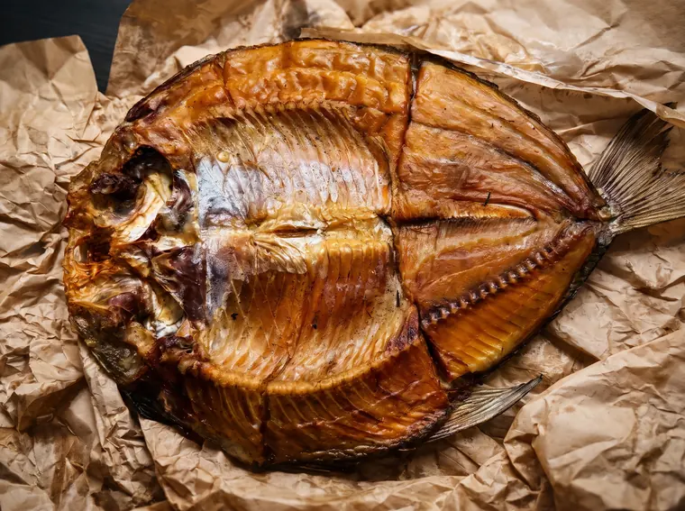
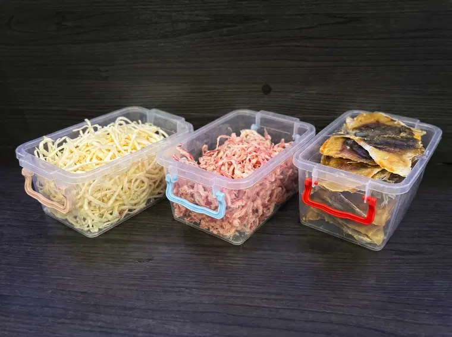
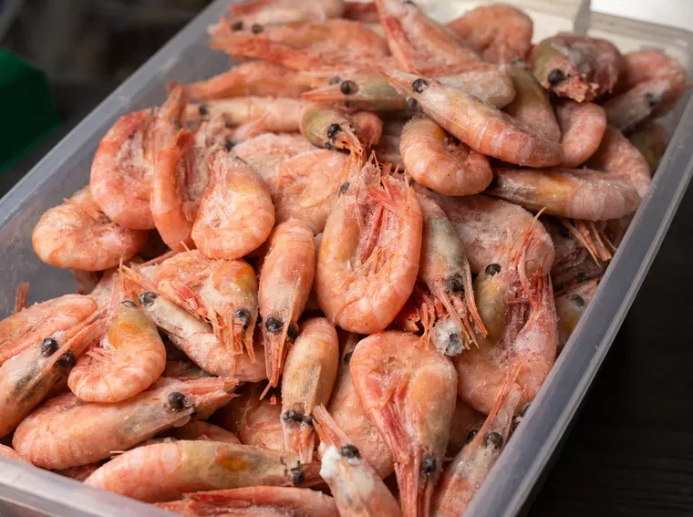
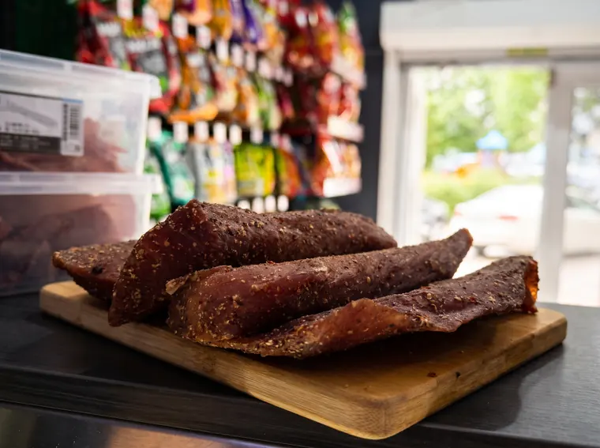

01 / GUSTĂRI
Pește afumat
Tostolob, stavrid și alte sortimente de pește afumat, în funcție de stoc.
AFUMĂTURI & SNACKURI
Pește afumat, fructe de mare și gustări din porc. Produse alese pentru pauzele care merită savurate.

CE GĂSEȘTI
Nu avem un meniu de restaurant; selecția depinde de produsele disponibile în ziua vizitei.

Tostolob, stavrid și alte sortimente de pește afumat, în funcție de stoc.

Calmar alb și calmar roșu afumat — două variante menționate în oferta GYM BEER.

Creveți mici, savuroși, potriviți alături de o bere rece.

Urechiușe de porc și chipsuri crocante de porc, promovate în sortimentul magazinului.

PEȘTE ȘI AFUMĂTURI
În postările GYM BEER mai apar tostolob, leșii și iucola afumată, precum și diferite afumături. Pentru lista completă și disponibilitatea zilei, contactează-ne.
Întreabă de disponibilitateGUSTĂRI PENTRU BERE, ÎN CHIȘINĂU